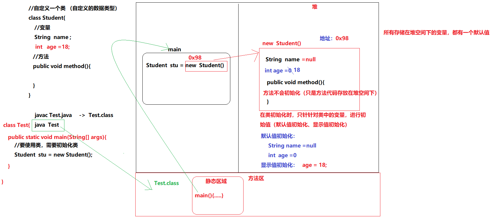
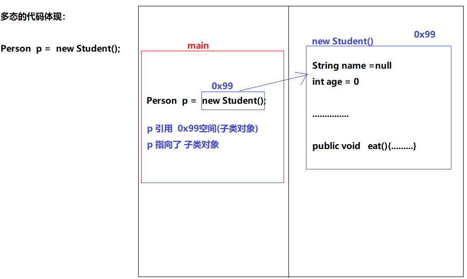

48. [Java]面向对象知识点梳理
48.1. 面向对象知识点梳理
48.1.1. 类
在java语言中，是使用类进行编写java程序
class 类名{ //书写java代码 }
在类中可以书写的内容有哪些？
变量
方法
在java语言中，类除了是用来定义所书写的程序外，类的另一个作用：自定义类型
48.1.2. 对象
当书写完自定义类后，需要对类进行初始化（数据类型 变量=初始化）
怎么对类进行初始化（初始化的动作，底层：开辟堆内存空间）
类名 对象名 = new 类名(); 类名 ： 数据类型 对象名 ： 变量名 new ： 告知JVM要开辟堆空间 类名() ： 告知JVM要开辟空间的大小 （ 类中所书写的所有内容[变量]，进行换算，然后开辟空间 ） 自动调用构造方法

小结 ： 类在程序中可以干什么？
java的书写的程序内容都是类为单位
类中书写的内容：变量、方法
java中的类： 数据类型 （JVM基于这个数据类型，开辟堆空间）
java语言提供的
程序员自己定义的（自定义类）
类中书写的内容，想要使用，怎么办?
需要对类进行初始化（JVM在堆中开辟一个空间）
初始化代码： 类名 对象名 = new 类名()
48.1.3. 封装
在java语言中，在类中书写程序代码（变量、方法）
把变量、方法封装到类中
在java语言中，封装的两种代码体现：
方法 ， 封装的是一段代码块（所封装的代码块通常是用来解决一个问题的【功能】）
类 ， 封装的是变量和方法
变量，成员变量（实例变量）
为什么叫成员？
类需要创建对象，而通过“对象.变量”的方式去访问，称为：成员变量
方法，成员方法
// 类
class Student{
int age;
}
//在使用Student -> age变量
Student stu = new Student();
stu.age = -10; //赋值为非法数据（影响了程序安全性）
//以上给age赋的值为非法数据
解决方案1：
定义一个变量，接收 -10
判断变量是否合法，合法：再赋值给stu.age
int a = -10;
if( a >= 0 ){
stu.age = a;
}
解决方案2： 在Studetn类中
第1步：不让外部直接使用age变量 （使用java中的关键字：private ）
第2步：让外部间接把值给到一个方法，在方法中判断值是否合法
合法： 把合法值， 赋值给 age变量
java语言为了保证程序的安全性，提供了一些访问权限： 让程序中的代码使用添加了权限
public
private
class Student{
private int age;// 私有的变量（只能在Student类中使用age）
public void setAge(int age){
// age = age;//局部变量 = 局部变量
//就近原则：方法中的局部变量会优先使用
//在java中，区分局部变量和成员变量，使用：this关键字
if(age>=0){
this.age = age;
}else{
// 异常
// 日志
}
}
public int getAge(){
return this.age;
}
}
Student stu = new Student();
stu.age = -10; //不能赋值（编译：报错）
//赋值合法数据：
stu.age = 10;// 编译：报错
stu.setAge(10);
stu.setAge(-10);//传递的是一个非法数据
System.out.println("年龄："+ stu.getAge() );
问题：想要给类中书写变量，进行赋值操作，怎么实现？
class Student{
private String name;
private int age;
//新增变量
private String gender;
private String phone;
private String stuId;
private double height;
.....
public void setName(String name){
this.name = name;
}
。。。。
}
//对类进行初始化
Student stu = new Student();
stu.setName("测试");
stu.setAge(10);
//当类中书写的成员变量过多时，需要使用大量的setXxx()方法，给类中的变量赋值
另一个斛决方案： java中的构造方法
48.1.4. 构造方法
什么是构造方法？
1、和类名相同
2、没有返回值类型（不需要书写void关键字）
class Student{
private String name;
private int age;
private String gender;
private String phone;
//构造方法
public Student(){ //空参构造方法
}
public Student(String name,int age,...){
//考虑到非法数据问题
if( age >= 0 ) {
this.age = age;
}else{
}
this.name=name;
...
//开发中有不少这样写：
this.setAge(age);
this.setPhone(phone);
}
//给私有的age变量赋值
public void setAge(int age){
if(age>=0){
this.age = age;
}else{
// 异常
// 日志
}
}
}
构造方法对于书写程序的作用： 可以对类中的私有成员变量进行赋值
1、当类中有私有成员时，对类中的私有成员进行赋值操作：setXxx()
2、当类中有私有成员时，使用类的有参构造方法，对类中的私有成员进行赋值操作
私有成员变量，只有在本类中使用（构造方法也属于本类）
小结：
针对类中的私有成员变量，有两种赋值方式：
1、public void setXxx(数据类型 参数)
2、类中的有参构造方法
注意：构造方法不是由书写的程序调用的，而是由JVM自动调用
什么时候调用构造方法？
在对类进行初始化操作时： 类名 对象名 = new 类名(); //在执行当前行代码时，自动调用构造方法
类：自定义类型（数据类型）
对象：对类进行初始化。 只有类初始化后，才可以访问类中的成员变量、成员方法
当变量、方法书写在类中时，就相当于把变量和方法进行了封装
为了程序中数据的安全性考虑，建议：把成员变量私有化
私有化的成员变量带来一个问题：外部程序无法访问
解决方案1： 提供相应的getter（获取私有成员变量的值）、setter（对私有成员变量赋值）
解决方案2： 使用类中的有参构造方法 （对私有成员变量赋值）
48.1.5. 继承
学生管理系统： 学生、老师
类：老师类
类：学生类
//学生类
class Student(){
private String name;
private int stuId;
private int age;
....
public void study(){
...
}
}
//老师类
class Teacher{
private String name;
private int teaId;
private int age;
....
public void teach(){
...
}
}
通过观察，Teacher类和Student类，中有不少相同的代码。
需求1：在Teacher类和Studetn类中，新增属性：教室
//学生类
class Student(){
private String name;
private int stuId;
private int age;
//新增
private String classRoom;
....
public void study(){
...
}
}
//老师类
class Teacher{
private String name;
private int teaId;
private int age;
//新增
private String classRoom;
....
public void teach(){
...
}
}
需求2：系统升级了， 原的学生学号和老师学号，int类型存储不下了，需要扩展类型： long 或 String
再对Student类和Teacher类进行改造
通过刚才两个需求，发现：每次都要修改多个类中的代码（程序的修改过多）
有没有简单一些方案呢？
答： 继承
要实现继承需要什么?
1、要定义一个父类
2、要定义一个子类，子类要继承父类
继承的关键字： extends
//定义一个父类
class Person{
private String name;
private int teaId;
private int age;
...
}
//定义一个子类
class Student extends Person{
public void study(){
...
}
}
//定义一个子类
class Teacher extends Person{
public void teach(){
...
}
}
继承的特点：
1、子类在继承父类后，可以直接使用父类中的非私有成员方法、成员变量
需求1：在Teacher类和Studetn类中，新增属性：教室
解决方案：只需要在Person类中，添加：教室 （只修改一处代码）
class Person{
private String name;
private int teaId;
private int age;
...
//新增
private String classRoom;
}
需求2：系统升级了， 原的学生学号和老师学号，int类型存储不下了，需要扩展类型： long 或 String
解决方案：只需要修改Person类中的代码。 int ->< long （只修改一个类中的代码）
class Person{
private String name;
private long teaId;
private int age;
...
//新增
private String classRoom;
}
继承的特点： 1、子类在继承父类后，可以直接使用父类中的非私有成员方法、成员变量
2、子类只能继承一个父类（单一继承）
3、子类继承一个父类，父类再继承一个爷爷类，爷爷类再继承… (多层次继承 )
子类除了可以使用父类中的非私有成员外，还可以使用爷爷类中的非私有成员
继承的好处：提供程序中代码的复用性
继承中构造方法的原理：
子类在初始化对象时，为了确保子类可以正常访问父类中的成员，需要先对父类进行初始化
子类的构造方法中，会先调用父类的构造方法
示例：
class Person{
public Person(){
}
}
class Student extends Person{
public Student(){
//第一行代码： super() //调用父类中的空参构造方法 （JVM自动添加）
}
}
【注意】：当父类中的没有空参构造方法时，子类的构造方法中必须书写：super(参数)
48.1.6. this和super
this ： 代表当前对象
super： 代表父类对象
使用方式：
//成员变量
this.name;//访问本类中的成员变量
super.name;//访问父类中的成员方法
//成员方法
this.method();//访问本类中的成员方法
super.method();//访问父类中的成员方法
//构造方法
this(); this(参数); //访问本类中的构造方法
super(); super(参数); //访问父类中的构造方法
48.1.7. 多态
//父类
abstract class Person{
private String name;
private int age;
....
//通常父类中的方法无法明确具体的功能代码时，只需要针对方法进行声明（只定义没有方法体）
//抽象方法： 只定义没有方法体
public abstract void eat();
}
class Student extends Person{
//子类在继承了抽象类后，必须重写抽象方法（java语法规定）
public void eat(){
System.out.println("去校区食堂吃饭...");
}
}
class Teacher extends Person{
//子类在继承了抽象类后，必须重写抽象方法（java语法规定）
public void eat(){
System.out.println("去校外吃饭...");
}
}
class Test{
public static void main(String[] args){
//创建学生对象
Student stu = new Student();
method1( stu , "zs" , 20 , .....)
//创建老师对象
Teacher tea = new Teacher();
method2( tea ,"ls" ,33 , ...... )
}
//大在书写程序时：当发现有重复的代码，建议都进行抽取封装：方法、类 （复用性）
public static void method1( Student stu, String name , int age , ... ){
stu.setName( name );//因为Student继承了Person，可以使用父类中的非私有成员
stu.setAge( age );
....
stu.eat();
}
public static void metho2 ( Teacher tea , String name , int age , ... ){
tea.setName( name );
tea.setAge( age );
....
tea.eat();
}
//添加就业班
//观察以上两个方法中的代码：除了对象名不同，其它都一样 (99%都是重复代码)
针对代码，再次精进：
public void method( ? , String name , int age , ...){
?.setName( name );
?.setAge( age );
....
?.eat();
}
? 有两个类型： Student 、 Teacher
Student类型和Teacher类型有什么相同？
继承的父类是同一个
java语言提供了一种方案：多态
多态的使用:
1、要有继承关系
2、子类要重写父类中的方法
3、 父类的引用指向子类对象
父类 父引用 = new 子类();
Person p1 = new Student();
p1.setName(...)
p1.eat()//调用的是对象中的eat方法
Person p2 = new Teacher();
p2.setName(....)
p2.eat();
public static void method( Person p , String name , int age , ... ){
p.setName( name );
p.setAge( age );
....
p.eat();
}
Student stu = new Student();
Person p = stu ; //多态
method( stu ,"ls" , 20 ,....);
Teacher tea = new Teacher();
method( tea );
}

//父类
abstract class Person{
private String name;
private int age;
....
//通常父类中的方法无法明确具体的功能代码时，只需要针对方法进行声明（只定义没有方法体）
//抽象方法： 只定义没有方法体
public abstract void eat();
}
class Student extends Person{
//子类在继承了抽象类后，必须重写抽象方法（java语法规定）
public void eat(){
System.out.println("去校区食堂吃饭...");
}
}
class Teacher extends Person{
//子类在继承了抽象类后，必须重写抽象方法（java语法规定）
public void eat(){
System.out.println("去校外吃饭...");
}
}
//需求升学：老师需要划分为基础班老师、就业班老师
//父类
abstract class Person{
private String name;
private int age;
....
//通常父类中的方法无法明确具体的功能代码时，只需要针对方法进行声明（只定义没有方法体）
//抽象方法： 只定义没有方法体
public abstract void eat();
}
class Student extends Person{
//子类在继承了抽象类后，必须重写抽象方法（java语法规定）
public void eat(){
System.out.println("去校区食堂吃饭...");
}
}
//基础班老师
class BasicTeacher extends Person{
//子类在继承了抽象类后，必须重写抽象方法（java语法规定）
public void eat(){
System.out.println("吃外卖...");
}
}
//就业班老师
class WorkTeacher extends Person{
//子类在继承了抽象类后，必须重写抽象方法（java语法规定）
public void eat(){
System.out.println("去校外吃饭...");
}
}
class Test{
public static void main(String[] args){
//创建学生对象
Student stu = new Student();
//创建基础老师对象
BasicTeacher tea = new BasicTeacher();
//创建就业班老师对象
WorkTeacher tea2 = new WorkTeacher();
method( stu , "zs" , 20 )
method( tea , "ls" , 33 )
method( tea2 , "ja" 30 )
}
public static void method( Person p , String name, int age ){
p.setName( name )
p.setAge(age)
...
p.eat();
}
}
在使用多态时，存在 一个问题：父引用无法使用子类中特有的成员
解决方案： 使用向下转型 （强制类型转换）
格式：子类 子类对象 = (子类) 父引用
当在进行强制类型转换时，如果父引用指向的对象类型 和 要转换的类型不匹配，就会发生：错误
父引用指向的对象类型 ： Person p = new Student(); //类型：Student
要转换的类型： Teacher
错误代码： Teacher tea = (Teacher ) p;//类型转换错误
通常在进行向下转型时，会先进行判断：
if( p instanceo Teacher){
Teacher tea = (Teacher ) p;
}
父引用 instanceof 子类类型 ： 判断父引用指向的对象类型 是否为 子类类型
抽象类
为什么有抽象类？
当程序中书写的方法只有声明，没有方法体代码实现，该需要修饰为：abstract
抽象方法必须存在于抽象类中
abstract class Person{ //抽象方法 public abstract void eat(); }
抽象类的特点：
不能实例化（ 不能创建对象。 只能通过子类来创建对象[多态的方式] ）
抽象类和普通类，除了不能实例化、多了一个抽象方法外，其他和普通类都一样
抽象类中可以书写的内容：抽象方法、构造方法、成员变量、成员方法
抽象类中的构造方法的作用：为了保证子类对象创建成功
抽象类通常都是父类
抽象类中的抽象方法，子类必须重写
48.1.8. 接口
接口比类好的地方：可以多实现
接口在java中怎么使用：
1、定义一个接口
2、定义一个子类，子类实现接口，子类中并重写接口中的抽象方法
3、接口要创建对象，只使用多态的形式： 接口 父引用 = new 子类()
//定义接口
interface InterA{
//接口中可书写内容是固定的
常量、抽象方法、静态方法、默认方法
public static final int NUM=10;//常量
public abstract void method();//抽象方法
public static void method2(){
}
public default void method3{
}
}
//定义实现接口的类
class MyInter implements InterA{
//重写抽象方法
}
//使用接口：
InterA inter = new MyInter();
abstract classs Person{
String name;
int age ;
abstract void eat();
}
class BasicStudent extends Person{
public void study(){
}
}
class WorkStudent extends Person implements InterA{
public void study(){
}
//特有的功能
public void mianshi(){
}
}
class BasicTeacher extends Person{
public void teach(){
}
}
class WorkerTeacher extends Person implements InterA{
public void teach(){
}
//特有的功能
public void mianshi(){
}
}
interface InterA{
public void mianshi();
}
需求：学生都有学习方法、老师都讲课方法
就业班学生、就业班老师都具有：面试能力
BasicStudent bs = new BasicStudent();
WorkTeacher tea = new WorkTeacher();
接口：
1、当有部分类中的功能是相同时，可以把这部分相同的功能，抽取出来，封装到：接口
要执行就业班老师和就业班学生的：面试功能
WorkTeacher tea = new WorkTeacher();
WorkStudenet stu = new WorkStudent();
tea.mianshi();
stu.mianshi();
method( tea );
method( stu )
public void method( InterA inter ){
inter.mianshi()
}
在企业开发中，大量使用接口。
为什么？
通常在开发前期，会针对开发中的功能进行制定（需求分析）
前期：制定功能（没有功能代码）
使用抽象方法
问题：抽象方法是定义哪里？ 抽象类 or 接口？
答案： 接口 （接口可以多实现）
程序开发：接口
public interface 接口A｛
//功能1：
public boolean login(String name,Strng passwd);
//功能2：
public boolean changePasswd(String name , String oldPasswd);
}
public interface 接口B｛
…..
｝
进入到开发阶段：
//程序员01号
class UserImpl implements IUser｛
//重写抽象方法
具体方法中的功能代码
｝
class OrderImpl implements IOrder{
}
class ManagerImpl implements IManager{
}
=======================================================
//程序员02号
class 类{
public void method(){
//让用户先登录
IUser user = new UserImpl();//多态 接口
user.login("","")
}
}
48.2. 面向对象
48.2.1. 包
在学习java基础时，使用过Scanner。 要使用Scanner需要导入：import java.util.Scanner
包是什么？
文件夹
可以帮我们管理文件
包能做什么？
在开发中，程序员会书写很多的类，这些类有一些可能会出现重名
在开发中，所开发的项目中，会包含不同功能模块：商品、订单、用户、….
针对不同的功能模块，书写不同的java程序
包的作用：可以帮我们管理.java文件
避免重名
实现不同功能的类，可以存放在不同的功能模块下
怎么使用包？
创建包：package
把不现的.java文件存放在不同的包下
导入包：import
当需要使用别人开发好的功能时，需要先找到功能所属的类，然后使用import导入这个类
创建类对象，使用对象.功能()
package使用注意事项：
1、package必须书写在java程序的首行
2、一个.java文件夹中，只能书写 一个package
package com.itheima; //只能有一个package
//package com.itcast;//报错
class Itcast{
}
包的命名规则：
1、全部小写字母
2、包名通常使用域名，倒着写的方式（企业中的标准）
3、通常创建包名，都是有多个包，包之间使用.连接
package com.itheima.hw.demo1;
在书写程序时，需要引用别人写好的类中功能，需要：导包
package com.itheima;// Test类归属的包
import java.util.Scanner;//导包
class Test{
Scanner sc = new Scanner(System.in);///要使用别人写的功能，要导入
}
在书写 程序时，有两种导入包的方式：
第一种：(不推荐)
java.util.Scanner sc = new java.util.Scanner(System.in);//书写类名时直接把包导入
java.util.Scanner sc2 = new java.util.Scanner(System.in);
java.util.Scanner sc3 = new java.util.Scanner(System.in);
第二种：
import java.util.Scanner;
Scanner sc = new Scanner(System.in);
Scanner sc2 = new Scanner(System.in);
Scanner sc3 = new Scanner(System.in);
48.2.2. 访问修饰符
在java中为了程序的安全性，java语言提供了4种用来访问成员的权限
1、public
public class Student{ //公开的 public void study(){ } }
2、private
public class Student{ private String name;//私有的。只能本类使用 }
3、默认 什么都不书写
public class Student{ String name;//默认的访问修饰符 }
4、protected
pubilc class Student extends Person{ protected String name;//受保护的（子类专用） }
访问修饰符号的访问范围
修饰符号 (从小到大排列)
本类
同一个包下的类(非子类)
同一个包下的子类
不同包下的类（非子类）
不同包下的子类
private
YES
NO
NO
NO
NO
默认
YES
YES
YES
NO
NO
protected
YES
NO
YES
NO
YES
public
YES
YES
YES
YES
YES
48.3. 常用API
48.3.1. Object类
Object类的基本认知：
1、java.lang.Object
2、Obejct类是java语言中的鼻祖类（最顶层的父类）
3、java中程序中所书写的类以及所使用的类，都要继承Object
//父类 class Father{//书写时没有书写继承 JVM自动会添加：class Father extends Object } //子类 class Child extends Father{ }
可以使用Object类中的成员方法(功能)
Object类中的成员方法 ：
String toString()
功能：返回字符串格式的对象
boolean equals(Object obj)
Student stu = new Student(); equals( stu ) // Object obj = stu;
功能：比较两个对象是否相等
48.3.2. String类
之前一直在使用：
class Student{
private String name;
}
String到底是什么 东西？ 它是一种数据类型呢？还是一个类呢？
String是一个类。不属于java的基本数据类型，属于引用类型
在java语言中，只要书写了"....",默认就是一个字符串对象：String类的对象
简单理解：在java中只要被英文的双引号包含的内容，默认就是一个String对象
String类的特点：
1、被英文双引号包含的内容，都是一个String类的实例
2、String中存储的字符串，不能被修改（不能对原值进行修改）
String类中的常用方法 ：
boolean equals(Object obj) : String类重写了Object类中equals方法。
String类中的equals方法 ，功能： 比较两个字符串的内容是否相等，区分大小字母
在java语言中：
比较字符串的地址，使用 ： ==
比较字符串内容，使用： equals() 方法
boolean equalsIgnoreCase(String str) ： 比较两个字符串是否相等，忽略大小写